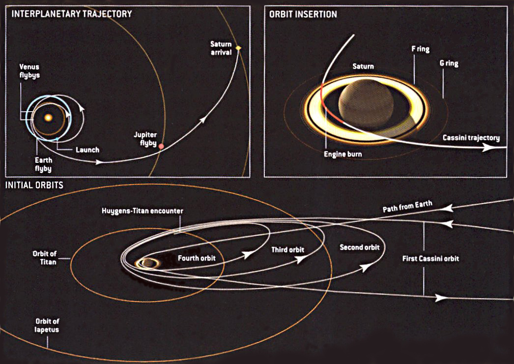

ESTEC Open Day: Sneak Preview of The Game
Designing an interplanetary Tom-Tom
05. October 2014

Have you ever wondered how probes travel through the Solar System, or what could a navigator look like, in an hypothetic future where people can move around freely between planets and moons? How do you get to a comet? How would you visit multiple moons in a system like Saturn or Jupiter? Is there a Lonely Planet guide for planets that are no longer lonely? And what to write on the how to get there section?
Space Hopper gives you the chance to learn how to plan an interplanetary trajectory, exposing you to many of the trade-offs and choices that experts have to face when planning the routes of real missions. While playing you will be helping us design such a futuristic planetary navigator. The physics engine behind space hopper is a transcriptipon of that used to plan real missions and your choices while playing will help us improve and develop algorithms that in the future may help planners to find their best way to get where many will go thereafter.